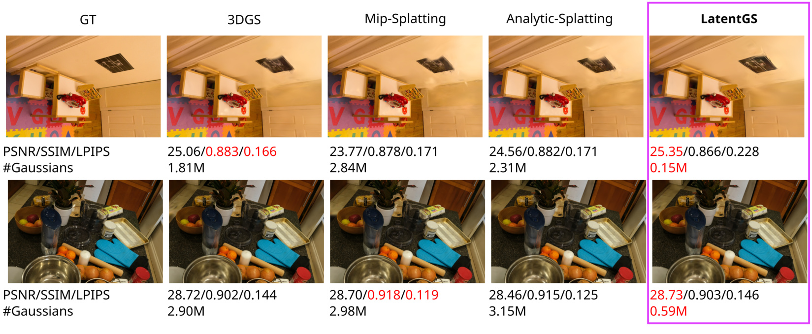
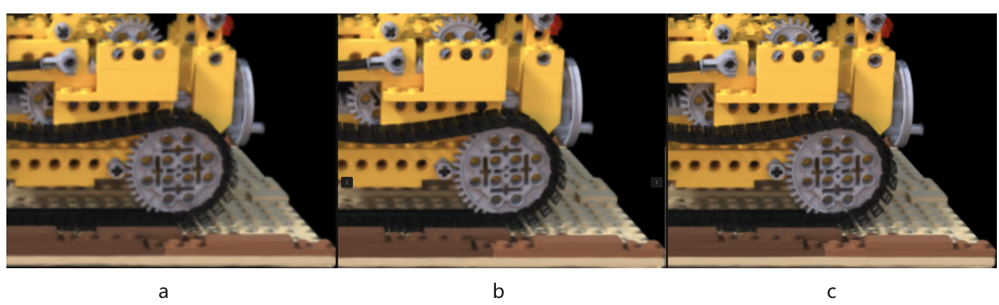
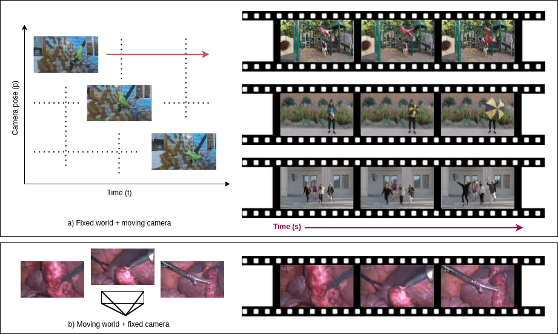
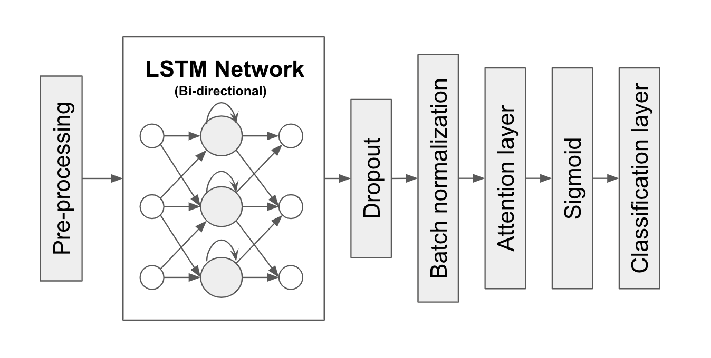

LatentGS: Probabilistic Densification for Efficient, Compact, and Faster 3D Gaussian Splatting
S. Khalid, M. Ibrahim, Y. Liu
ICLR 2026Neural rendering · variational densification
Research Scientist, Huawei Canada · PhD, University of Toronto
Toronto, Canada · Affiliate, Vector Institute · skhalid [at] cs.toronto.edu
I am a Research Scientist at Huawei Canada in Toronto, working on 3D computer vision and neural rendering. I completed my PhD in Machine Learning at the University of Toronto (2019–2024), advised by Prof. Frank Rudzicz, where my thesis focused on self-supervised visual scene understanding using structured representations.
My current research centers on 3D Gaussian splatting and neural rendering — making high-fidelity scene reconstruction more compact, efficient, and controllable. Alongside this, I have an ongoing interest in representation learning, explainable AI, and applying machine learning to healthcare, from surgical skill assessment to clinical outcome prediction.



